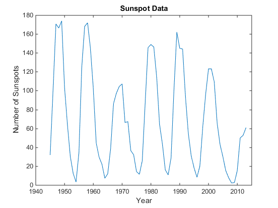

Convert Data from Web Service
This example shows how to download data from a web service and use a function as a
content reader with webread.
The National Geophysical Data Center (NGDC) provides various geophysical and space
weather data via a web service. Among other data sets, the NGDC aggregates sunspot
numbers published by the American Association of Variable Star Observers (AAVSO). Use
webread to download sunspot numbers for every year since
1945.
api = 'http://www.ngdc.noaa.gov/stp/space-weather/'; url = [api 'solar-data/solar-indices/sunspot-numbers/' ... 'american/lists/list_aavso-arssn_yearly.txt']; spots = webread(url); whos('spots')
Name Size Bytes Class Attributes spots 1x1269 2538 char
The NGDC web service returns the sunspot data as text. By default,
webread returns the data as a character
array.
spots(1:100)
ans =
American
Year SSN
1945 32.3
1946 99.9
1947 170.9
1948 166.6webread can use a function to return the data as a different
type. You can use readtable with webread to
return the sunspot data as a table.
Create a weboptions object that specifies a function for
readtable.
myreadtable = @(filename)readtable(filename,'HeaderLines',1, ... 'Format','%f%f','Delimiter','space','MultipleDelimsAsOne',1); options = weboptions('ContentReader',myreadtable);
For this data, call readtable with several
Name,Value input arguments to convert the data. For example,
Format indicates that each row has two numbers. Spaces are
delimiters, and multiple consecutive spaces are treated as a single delimiter. To call
readtable with these input arguments, wrap
readtable and the arguments in a new function,
myreadtable. Create a weboptions object with
myreadtable as the content reader.
Download sunspot data and return the data as a table.
spots = webread(url,options);
whos('spots')
Name Size Bytes Class Attributes spots 76x2 2932 table
Display the sunspot data by column and row.
spots(1:4,{'Year','SSN'})
ans =
Year SSN
____ _____
1945 32.3
1946 99.9
1947 170.9
1948 166.6
Plot sunspot numbers by year. Use table functions to select sunspot numbers up to the
year 2013. Convert the Year and SSN columns to
arrays and plot them.
rows = spots.Year < 2014;
vars = {'Year','SSN'};
spots = spots(rows,vars);
year = spots.Year;
numspots = spots.SSN;
figure
plot(year,numspots);
title('Sunspot Data');
xlabel('Year');
ylabel('Number of Sunspots');
xlim([1940 2015])
ylim([0 180])

Aggregated data and web service courtesy of the NGDC. Sunspot data courtesy of the AAVSO, originally published in AAVSO Sunspot Counts: 1943-2013, AAVSO Solar Section (R. Howe, Chair).
See NGDC Privacy Policy, Disclaimer, and Copyright for NGDC terms of service.
See AAVSO Solar Section for more information on AAVSO solar data, including terms of use.